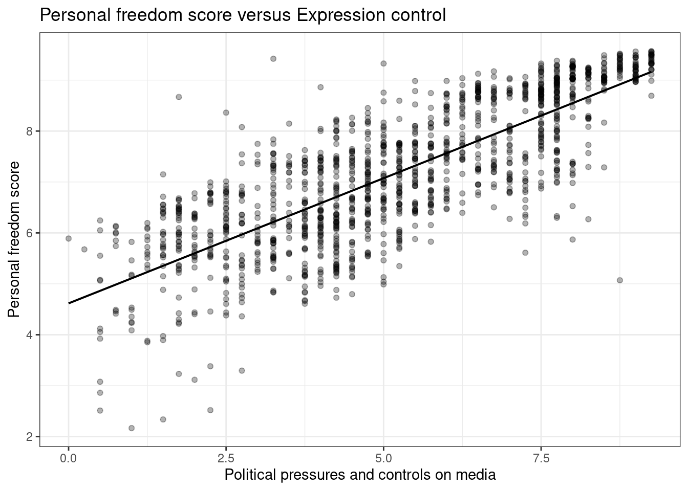
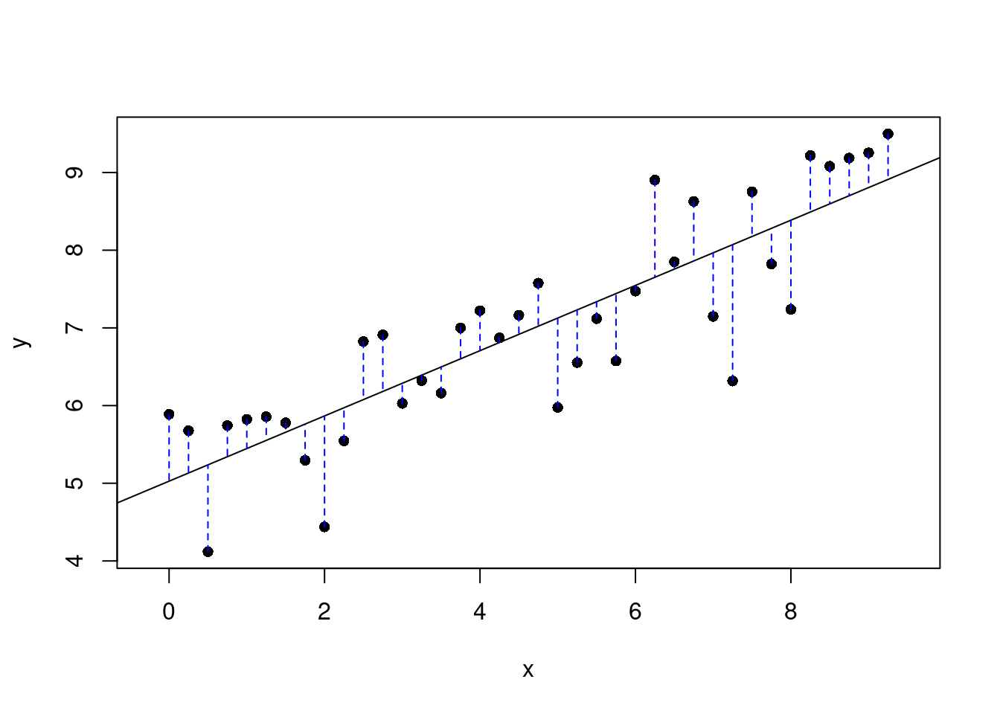
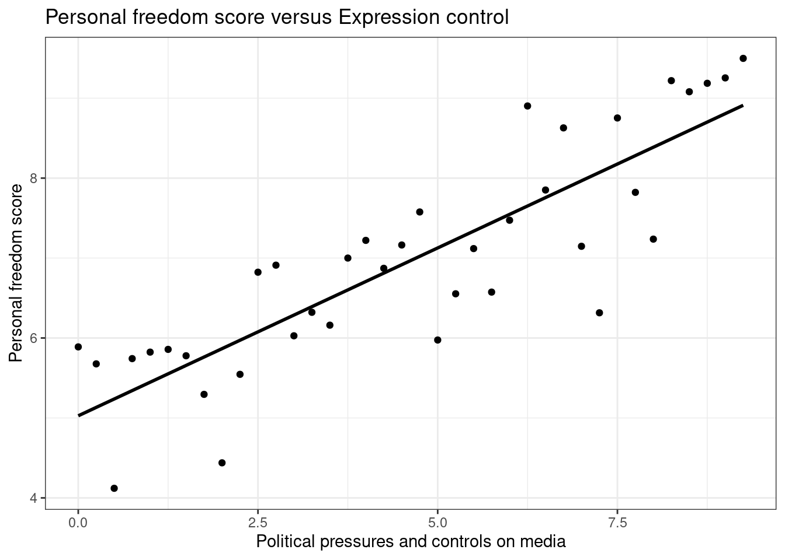
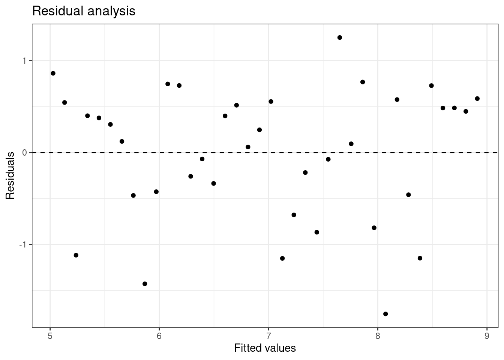
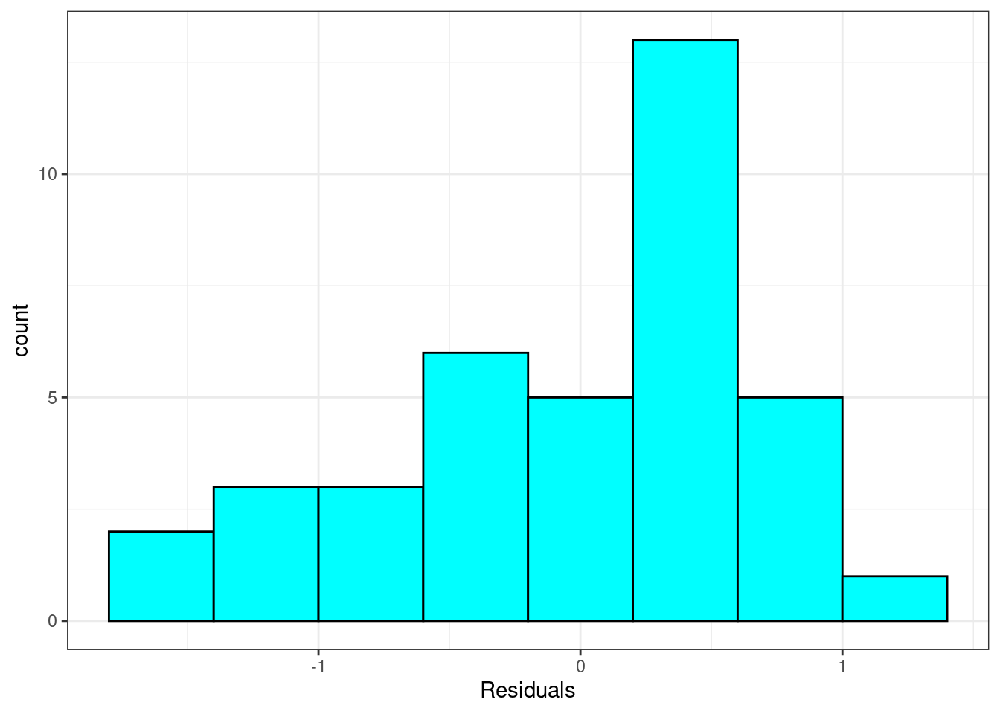
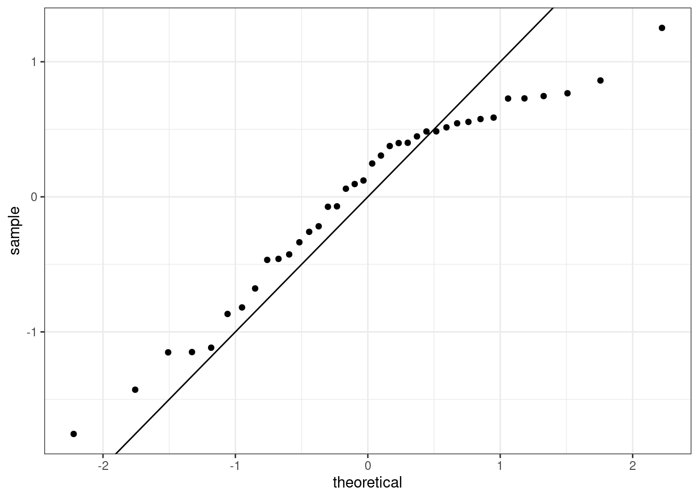

library(tidyverse)
library(mosaic)27 Linear Regression Case Study
27.1 Objectives
Using
R, generate a linear regression model and use it to produce a prediction model.Using plots, check the assumptions of a linear regression model.
27.2 Introduction to linear regression
Linear regression is often one of the first methods taught in a machine learning course. It is an excellent tool with a wide range of applications. It can be used solely to predict an outcome of interest, a prediction model, and/or be used for inference. In this book, we will mainly focus on its use for inference. Even so, this treatment barely scratches the surface of what can be done. There are entire courses devoted to the interpretation of linear regression models.
When used as a predictive model, linear regression fits into the category of a function approximation method. The parameters of the model, function, are fit using an objective, loss, function and optimization procedure. For linear regression in this book, the loss function will be sum of squared errors which leads to closed form solution using differentiation. In machine learning courses you will learn about different types of loss functions to include penalized or regularized versions as well as different optimization engines. For software such as tidymodels in R or scitkit-learn in python, you will specify the loss function and optimization engine directly.
27.3 Case study introduction
The Human Freedom Index is a report that attempts to summarize the idea of “freedom” through a bunch of different variables for many countries around the globe. It serves as a rough objective measure for the relationships between the different types of freedom - whether it’s political, religious, economical or personal freedom - and other social and economic circumstances. The Human Freedom Index is an annually co-published report by the Cato Institute, the Fraser Institute, and the Liberales Institut at the Friedrich Naumann Foundation for Freedom.
In this case study, you’ll be analyzing data from Human Freedom Index reports from 2008-2016. Your aim will be to summarize a few of the relationships within the data both graphically and numerically in order to find which variables can help tell a story about freedom. This will be done using the tool of regression.
Again, like our previous case studies, this chapter will introduce many of the ideas of the block. Don’t worry if they seem difficult and you feel overwhelmed a bit, we will come back to the ideas in the following chapters.
27.3.1 Load packages
Let’s load the packages.
27.3.2 The data and exploratory analysis
The data we’re working with is in the file called hfi.csv under the data folder. The name hfi is short for Human Freedom Index.
Exercise
Read the data intoR. What are the dimensions of the dataset?
hfi<-tibble(read_csv("data/hfi.csv"))dim(hfi)[1] 1458 123There are 1458 observations and 123 variables in the data frame.
Exercise
Create summaries of the first 10 variables in the data. We just don’t want a large printout.
inspect(hfi[,1:10])
categorical variables:
name class levels n missing
1 ISO_code character 162 1458 0
2 countries character 162 1458 0
3 region character 10 1458 0
distribution
1 AGO (0.6%), ALB (0.6%), ARE (0.6%) ...
2 Albania (0.6%), Algeria (0.6%) ...
3 Sub-Saharan Africa (25.9%) ...
quantitative variables:
name class min Q1 median Q3
1 year numeric 2008 2010.000000 2012.000000 2014.000000
2 pf_rol_procedural numeric 0 4.133333 5.300000 7.389499
3 pf_rol_civil numeric 0 4.549550 5.300000 6.410975
4 pf_rol_criminal numeric 0 3.789724 4.575189 6.400000
5 pf_rol numeric 0 4.131746 4.910797 6.513178
6 pf_ss_homicide numeric 0 6.386978 8.638278 9.454402
7 pf_ss_disappearances_disap numeric 0 10.000000 10.000000 10.000000
max mean sd n missing
1 2016.000000 2012.000000 2.582875 1458 0
2 9.700000 5.589355 2.080957 880 578
3 8.773533 5.474770 1.428494 880 578
4 8.719848 5.044070 1.724886 880 578
5 8.723094 5.309641 1.529310 1378 80
6 9.926568 7.412980 2.832947 1378 80
7 10.000000 8.341855 3.225902 1369 89Exercise
Create a scatter plot to display the relationship between the personal freedom score,pf_score, as the response andpf_expression_controlas the predictor. Does the relationship look linear?

Figure 27.1 and Figure 27.2 are both scatterplots, we included both to demonstrate both the ggformula and ggplot2 packages. In these figures, the relationship does look linear. Although, we should be uncomfortable using the model at the end points. That is because there are less points at the edge and and linear estimation has larger variance at the endpoints, the predictions at the endpoints is more suspect.
Exercise
The relationship looks linear, quantify the strength of the relationship with the correlation coefficient.
hfi %>%
summarise(cor(pf_expression_control, pf_score, use = "complete.obs"))# A tibble: 1 × 1
`cor(pf_expression_control, pf_score, use = "complete.obs")`
<dbl>
1 0.796The sample correlation coefficient, indicates a strong positive linear relationship between the variables.
Note that we set the use argument to “complete.obs” since there are some observations with missing values, NA.
27.4 Sum of squared residuals
In this section, you will use an interactive function to investigate what we mean by “sum of squared residuals”. You will need to run this function in your console. Running the function also requires that the hfi data set is loaded in your environment, which we did above.
Think back to the way that we described the distribution of a single variable. Recall that we discussed characteristics such as center, spread, and shape. It’s also useful to be able to describe the relationship of two numerical variables, such as pf_expression_control and pf_score above.
Exercise
Looking at your scatterplot above, describe the relationship between these two variables. Make sure to discuss the form, direction, and strength of the relationship as well as any unusual observations.
We would say that there is a strong positive linear relationship between the two variables.
Just as you’ve used the mean and standard deviation to summarize a single variable, you can summarize the relationship between these two variables by finding the line that best follows their association. Use the following interactive function to select the line that you think does the best job of going through the cloud of points.
First we must remove missing values from the data set and to make the visualization easier, we will just randomly sample 30 of the data points. We included hf_score because we will need it later.
set.seed(4011)
hfi_sub <- hfi %>%
select(pf_expression_control,pf_score,hf_score) %>%
drop_na() %>%
group_by(pf_expression_control) %>%
slice_sample(n=1)We used the function slice_sample() to ensure we have unique values of pf_expression_control in our sample.
Exercise
In yourRconsole, run the code above to create the objecthfi_sub. You are going to have to load packages and read in thehfidata set. Then execute the next lines of code. Pick two locations in the plot to create a line. Record the sum of squares.
First, run this code chunk to create a function plot_ss() that you will use next.
# Function to create plot and residuals.
plot_ss <- function (x, y, data, showSquares = FALSE, leastSquares = FALSE)
{
x <- eval(substitute(x), data)
y <- eval(substitute(y), data)
plot(y ~ x, asp = 1, pch = 16)
if (leastSquares) {
m1 <- lm(y ~ x)
y.hat <- m1$fit
}
else {
cat("Click two points to make a line.")
pt1 <- locator(1)
points(pt1$x, pt1$y, pch = 4)
pt2 <- locator(1)
points(pt2$x, pt2$y, pch = 4)
pts <- data.frame(x = c(pt1$x, pt2$x), y = c(pt1$y, pt2$y))
m1 <- lm(y ~ x, data = pts)
y.hat <- predict(m1, newdata = data.frame(x))
}
r <- y - y.hat
abline(m1)
oSide <- x - r
LLim <- par()$usr[1]
RLim <- par()$usr[2]
oSide[oSide < LLim | oSide > RLim] <- c(x + r)[oSide < LLim |
oSide > RLim]
n <- length(y.hat)
for (i in 1:n) {
lines(rep(x[i], 2), c(y[i], y.hat[i]), lty = 2, col = "blue")
if (showSquares) {
lines(rep(oSide[i], 2), c(y[i], y.hat[i]), lty = 3,
col = "orange")
lines(c(oSide[i], x[i]), rep(y.hat[i], 2), lty = 3,
col = "orange")
lines(c(oSide[i], x[i]), rep(y[i], 2), lty = 3, col = "orange")
}
}
SS <- round(sum(r^2), 3)
cat("\r ")
print(m1)
cat("Sum of Squares: ", SS)
}Next run the next code chunk that for us resulted in Figure 27.3. You will have to pick to points on the plot that you think gives the best line.
Click two points to make a line.
Call:
lm(formula = y ~ x, data = pts)
Coefficients:
(Intercept) x
5.0272 0.4199
Sum of Squares: 19.121

Once you’ve picked your two locations, the line you specified will be shown in black and the residuals in blue. Residuals are the difference between the observed values and the values predicted by the line:
\[ e_i = y_i - \hat{y}_i \]
The most common way to do linear regression is to select the line that minimizes the sum of squared residuals. To visualize the squared residuals, you can rerun the plot command and add the argument showSquares = TRUE.
plot_ss(x = pf_expression_control, y = pf_score, data = hfi_sub, showSquares = TRUE)Note that the output from the plot_ss function provides you with the slope and intercept of your line as well as the sum of squares.
Exercise:
Usingplot_ss, choose a line that does a good job of minimizing the sum of squares. Run the function several times. What was the smallest sum of squares that you got?
27.5 The linear model
It is rather cumbersome to try to get the correct least squares line, i.e. the line that minimizes the sum of squared residuals, through trial and error. Instead, you can use the lm() function in R to fit the linear model (a.k.a. regression line).
m1 <- lm(pf_score ~ pf_expression_control, data = hfi_sub)The first argument in the function lm is a formula that takes the form y ~ x. Here it can be read that we want to make a linear model of pf_score as a function of pf_expression_control. The second argument specifies that R should look in the hfi_sub data frame to find the two variables. This should be familiar to us since we have been doing this when we used the mosaic package.
The output of lm is an object that contains all of the information we need about the linear model that was just fit. We can access this information using the summary() function.
summary(m1)
Call:
lm(formula = pf_score ~ pf_expression_control, data = hfi_sub)
Residuals:
Min 1Q Median 3Q Max
-1.7559 -0.4512 0.1838 0.5369 1.2510
Coefficients:
Estimate Std. Error t value Pr(>|t|)
(Intercept) 5.02721 0.23186 21.682 < 2e-16 ***
pf_expression_control 0.41988 0.04312 9.736 1.26e-11 ***
---
Signif. codes: 0 '***' 0.001 '**' 0.01 '*' 0.05 '.' 0.1 ' ' 1
Residual standard error: 0.7288 on 36 degrees of freedom
Multiple R-squared: 0.7248, Adjusted R-squared: 0.7171
F-statistic: 94.8 on 1 and 36 DF, p-value: 1.262e-11Let’s consider this output piece by piece. First, the formula used to describe the model is shown at the top. After the formula you find the five-number summary of the residuals. The “Coefficients” table shown next is key; its first column displays the linear model’s y-intercept and the coefficient of pf_expression_control. With this table, we can write down the least squares regression line for the linear model:
\[\hat{\text{pf\_score}} = 5.02721 + 0.41988 \times \text{pf\_expression\_control}\]
At least these are the values we got on our machine using the seed provided. Yours may differ slightly. One last piece of information we will discuss from the summary output is the Multiple R-squared, or more simply, \(R^2\). The \(R^2\) value represents the proportion of variability in the response variable that is explained by the explanatory variable. For this model, 72.48% of the variability in pf_score is explained by pr_expression_control.
Exercise:
Fit a new model that usespf_expression_controlto predicthf_score, or the total human freedom score. Using the estimates from theRoutput, write the equation of the regression line. What does the slope tell us in the context of the relationship between human freedom and the amount of political pressure on media content?
m2<-lm(hf_score ~ pf_expression_control, data = hfi_sub)summary(m2)
Call:
lm(formula = hf_score ~ pf_expression_control, data = hfi_sub)
Residuals:
Min 1Q Median 3Q Max
-1.5151 -0.5776 0.2340 0.4622 1.0633
Coefficients:
Estimate Std. Error t value Pr(>|t|)
(Intercept) 5.45660 0.21585 25.279 < 2e-16 ***
pf_expression_control 0.30707 0.04015 7.649 4.72e-09 ***
---
Signif. codes: 0 '***' 0.001 '**' 0.01 '*' 0.05 '.' 0.1 ' ' 1
Residual standard error: 0.6785 on 36 degrees of freedom
Multiple R-squared: 0.6191, Adjusted R-squared: 0.6085
F-statistic: 58.5 on 1 and 36 DF, p-value: 4.718e-09\[ \hat{\text{hf\_score}} = 5.45660 + 0.30707 \times \text{pf\_expression\_control} \] As the political pressure increases by one unit, the average human freedom score increases by 0.307.
27.6 Prediction and prediction errors
Let’s create a scatterplot with the least squares line for m1, our first model, laid on top, Figure 27.4.

Here, we are literally adding a layer on top of our plot. The stat_smooth() function creates the line by fitting a linear model, we could use geom_lm() as well. It can also show us the standard error se associated with our line, but we’ll suppress that for now.
This line can be used to predict \(y\) at any value of \(x\). When predictions are made for values of \(x\) that are beyond the range of the observed data, it is referred to as extrapolation and is not usually recommended. However, predictions made within the range of the data are more reliable. They’re also used to compute the residuals.
Exercise:
If someone saw the least squares regression line and not the actual data, how would they predict a country’s personal freedom score for one with a 6.75 rating forpf_expression_control? Is this an overestimate or an underestimate, and by how much? In other words, what is the residual for this prediction?
To predict, we will use the predict function, but we have to send the new data as a data frame.
predict(m1,newdata=data.frame(pf_expression_control=6.75)) 1
7.861402 We thus predict a value of 7.86 for the average pf_score.
The observed value is 8.628272.
hfi_sub %>%
filter(pf_expression_control==6.75)# A tibble: 1 × 3
# Groups: pf_expression_control [1]
pf_expression_control pf_score hf_score
<dbl> <dbl> <dbl>
1 6.75 8.63 8.25The residual is:
8.628272 - 7.861402[1] 0.76687We underestimated the actual value.
Another way to do this is to use the broom package.
library(broom)augment(m1) %>%
filter(pf_expression_control==6.75)# A tibble: 1 × 8
pf_score pf_expression_control .fitted .resid .hat .sigma .cooksd .std.resid
<dbl> <dbl> <dbl> <dbl> <dbl> <dbl> <dbl> <dbl>
1 8.63 6.75 7.86 0.767 0.0421 0.727 0.0254 1.0827.7 Model diagnostics
To assess whether the linear model is reliable, we need to check for
- linearity,
- independence,
- nearly normal residuals, and
- constant variability.
Linearity: You already checked if the relationship between pf_score and pf_expression_control is linear using a scatterplot. We should also verify this condition with a plot of the residuals vs. fitted (predicted) values, Figure 27.5.

Notice here that m1 can also serve as a data set because stored within it are the fitted values (\(\hat{y}\)) and the residuals. Also note that we’re getting more sophisticated with the code in Figure 27.5. After creating the scatterplot on the first layer (first line of code), we overlay a horizontal dashed line at \(y = 0\) (to help us check whether residuals are distributed around 0), and we also rename the axis labels to be more informative and add a title.
Exercise:
Is there any apparent pattern in the residuals plot? What does this indicate about the linearity of the relationship between the two variables?
The width is constant and there is no trend in the data. The linearity assumption is not bad.
Independence: This is difficult to check with residuals and depends on how the data was collected.
Nearly normal residuals: To check this condition, we can look at a histogram, Figure 27.6.

or a normal probability plot of the residuals, Figure 27.7.

Note that the syntax for making a normal probability plot is a bit different than what you’re used to seeing: we set sample equal to the residuals instead of x, and we set a statistical method qq, which stands for “quantile-quantile”, another name commonly used for normal probability plots.
It is a little difficult at first to understand how the qq plot indicated that the distribution was skewed to the left. The points indicate the quantile from the sample, standardized to have mean zero and standard deviation one, plotted against the same quantiles from a standard normal. It the sample matched a standard normal the points would align on the 45-degree line. From the plot, we see that as the theoretical quantile get larger, further from zero, the sample do not. That is why the trajectory of the points in the upper right looks flat, below the 45-degree line. Thus the distribution is compressed on the right making it skewed to the left.
Exercise: Based on the histogram and the normal probability plot, does the nearly normal residuals condition appear to be met?
No, the sample is small but it appears the residual are skewed to the left.
Constant variability:
Exercise: Based on the residuals vs. fitted plot, does the constant variability condition appear to be met?
Yes, the width of the plot seems constant.
27.8 Brief summary
This case study introduced simple linear regression. We look at the criteria to find a best fit linear line between two variables. We also used R to fit the line. We examined the output from R and used it to explain and predict with our model. In the remainder of this block we will develop these ideas further and extend to multiple predictors and binary outcomes. This is a perfect introduction for Math 378.